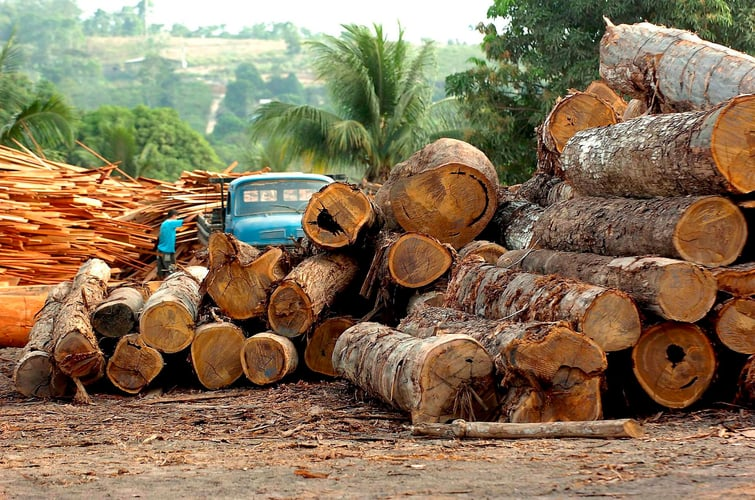

Загроза сельви

Сельва знаходиться під великою загрозою через вирубку лісів, пожежі та зміну клімату.
Основні загрози:
- Вирубка лісів: Щорічно зникають тисячі гектарів лісу через сільське господарство та тваринництво.
- Пожежі: Часті пожежі спричиняють викид великої кількості вуглекислого газу.
- Незаконна вирубка: Неконтрольована вирубка деревини для продажу.
Що можна зробити?
Для збереження сельви важливо підтримувати природоохоронні ініціативи, зменшувати споживання продукції, що сприяє вирубці лісів, та поширювати інформацію про важливість тропічних лісів.